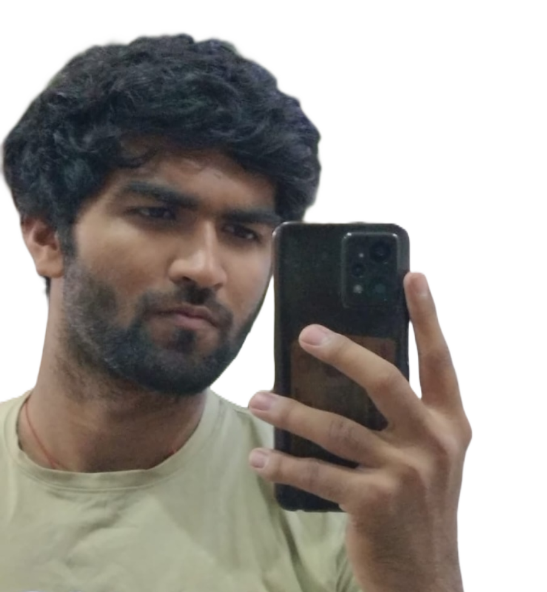

~ About Me ~
- I am currently a second-year B.Tech Computer Science student with a keen interest in Full Stack Development. My academic and project experiences have provided me with a solid foundation in web technologies, including HTML, CSS, and JavaScript, which I have applied in various projects utilizing popular frameworks and interfaces like Spring Boot and Bootstrap.
- I have a growing expertise in SASS, which enhances the efficiency and maintainability of website styling. This skill complements my strong foundation in front-end development and helps in creating more dynamic and visually appealing websites. In addition to these technical skills, I have substantial experience in API integration, which allows me to build interactive and user-centric web applications that react seamlessly to user inputs and server responses.
- On the back-end side, I have engaged extensively with database management systems, working with both MongoDB and MySQL. These experiences have equipped me with robust skills in handling complex data structures, designing schemas that optimize data retrieval and storage, and implementing secure data interactions critical for today's web applications.
- My technical journey also includes projects where I have applied my full-stack capabilities to develop comprehensive applications from the ground up. These projects often required a deep understanding of both client-side and server-side interactions, and have helped me sharpen my problem-solving skills and ability to work across different layers of development stack.
- I am passionate about leveraging technology to solve real-world problems and am continually seeking out new learning opportunities to expand my knowledge and skills. My goal is to develop applications that are not only functional but also intuitive and engaging, enhancing user experience and accessibility.
- As I advance in my career, I am eager to take on more challenging projects and collaborate with professionals who share a vision for innovation in technology. I am committed to bringing my background in both front-end and back-end development to contribute effectively in a dynamic professional environment.:)
~ My Work ~
Portfolio
Bloging site
landing page
Responsive form
 Portfolio
Portfolio